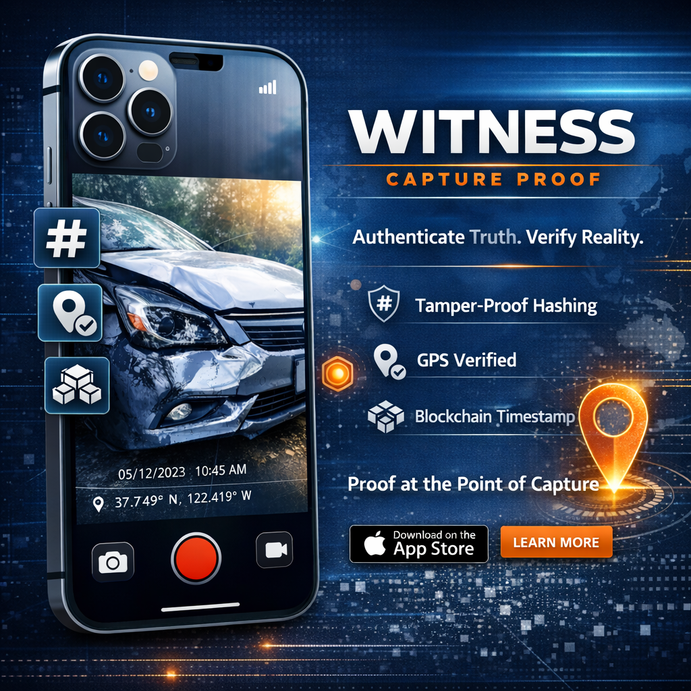

Witness Capture Proof
Authenticate what matters

Proof at the Point of Capture
Witness turns your iPhone into a cryptographic evidence tool. Every photo and video you capture is immediately hashed, timestamped, and anchored to the blockchain, creating an unbroken chain of authenticity from the moment you press record.
In a world of deepfakes and manipulated media, Witness provides something simple but powerful: proof that your content is real, unaltered, and captured exactly when and where you say it was.
How It Works
Capture
Take a photo or video using the Witness camera. Media, EXIF data, GPS coordinates, and device info are captured simultaneously.
Hash
A cryptographic composite hash is generated from the media file and all associated metadata, creating a unique digital fingerprint.
Anchor
The hash is submitted to the blockchain for anchoring, providing an immutable, independently verifiable timestamp.
Verify
Anyone can check authenticity through the Witness verification portal. If a single pixel has changed, the hash will not match.
Key Features
- Cryptographic composite hashing of image, video, EXIF, GPS, and camera metadata
- Blockchain-anchored timestamps for immutable proof of capture
- GPS location verification embedded at the point of capture
- Independent verification website for third-party authentication
- Works offline with hash generation queued for anchoring when connectivity returns
- No account required for verification, just the file and the hash
Use Cases
Insurance Claims
Authenticated photo and video evidence for property damage, motor claims, and site inspections with verifiable timestamps and location data.
Legal Evidence
Court-admissible documentation with cryptographic proof of when and where media was captured, untampered from the moment of recording.
Journalism
Prove the authenticity of field reporting, conflict zone footage, and investigative documentation against deepfake accusations.
Property Inspections
Timestamped, location-verified condition reports for real estate, construction progress, and tenancy documentation.
Built on Open Standards
Witness uses established cryptographic standards rather than proprietary systems. Your proof of authenticity is not locked to our platform. Anyone with the original file and the hash can independently verify authenticity using standard tools.
Register Your Interest
Witness Capture Proof is currently in development. If you'd like to be notified when Witness launches, or are interested in being considered as an early access partner, register your interest below.